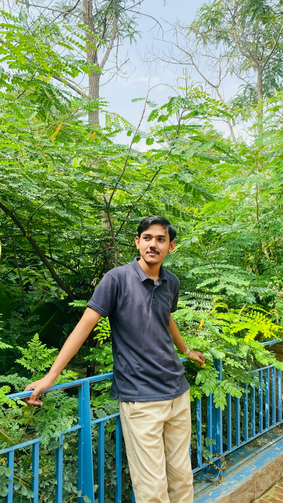

Meet the Developer
Computer Systems Engineering Student · Co-Founder & Lead Developer at Voidium
Built this Kali Linux clone as an assignment: full HTML / CSS / Bootstrap recreation of the official site, matching every section, animation, and dual light/dark theme pixel-for-pixel.
Kotri / Jamshoro, Sindh
Co-Founder & Lead Dev
Official Developer, cs.muet.edu.pk
Official Developer, iict.muet.edu.pk
I'm a Computer Systems Engineering student at Mehran University of Engineering and Technology, based in Kotri, Sindh, Pakistan. Alongside my studies I co-founded Voidium, a software studio started by MUET engineering students, where I work as the lead developer on client and institutional projects.
I currently hold official developer roles for MUET's Computer Science Department (cs.muet.edu.pk) and the Institute of Information and Communication Technologies (iict.muet.edu.pk), building and maintaining production systems used by the department and institute.
This page — and the entire Kali Linux clone it belongs to — was built as a university assignment: a fully responsive HTML, CSS, and Bootstrap recreation of the official Kali Linux website, including the laptop-screen mockup, the cursor-driven tools scroller, the crossfading "Kali Everywhere" showcase, and a dark/light theme switch in the footer.